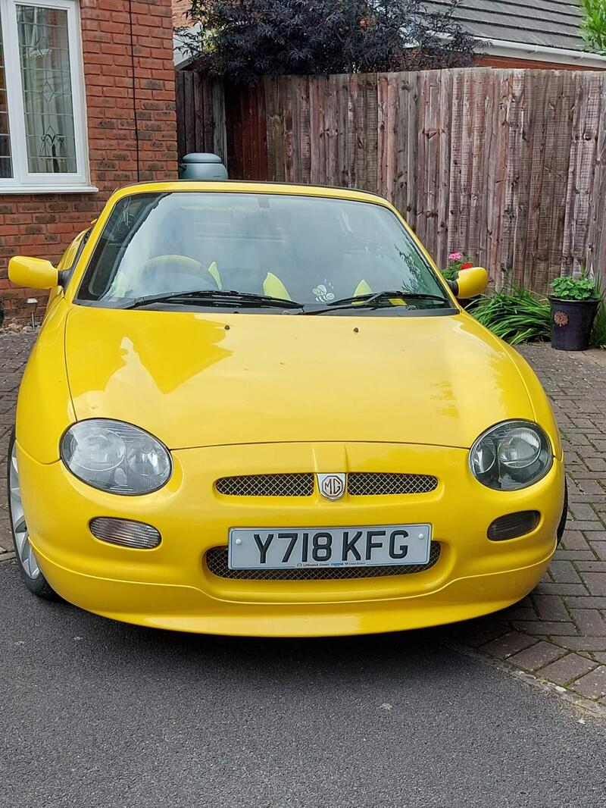
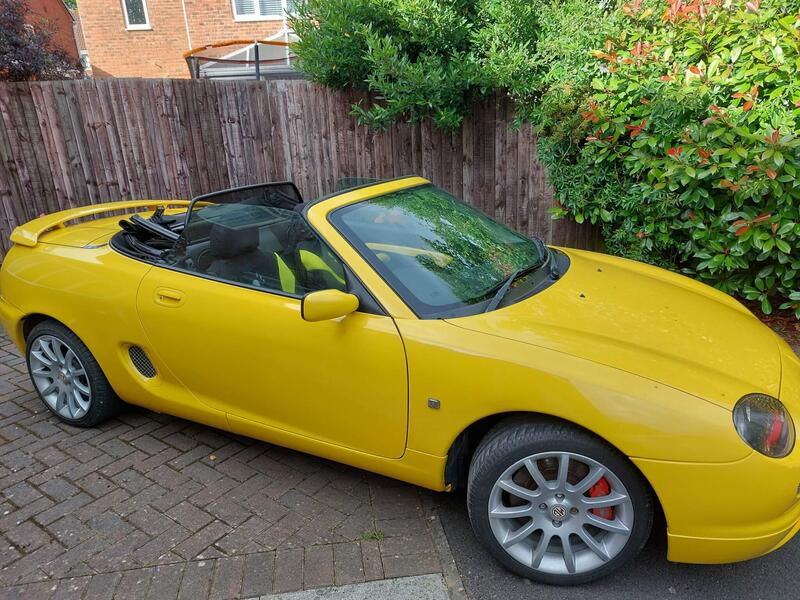
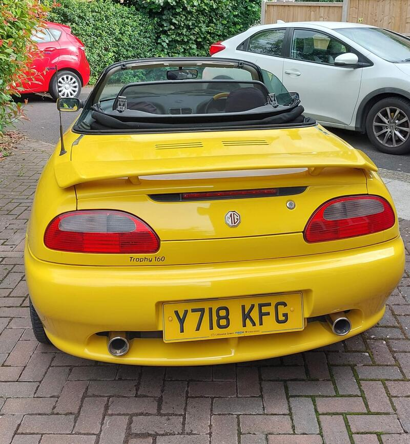
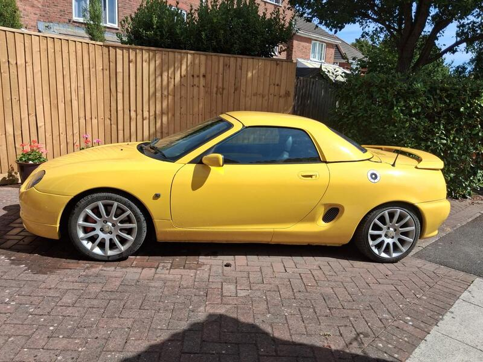

Seller photos from the AutoTrader ad.
MG MGF 1.8 160 Trophy SE
The enthusiast's MGF, with the head gasket done and a hardtop included.
Key facts
| Price | £2,995 |
|---|---|
| Year | 2001 |
| Miles | 84,400 |
| Model | MG MGF 1.8 160 Trophy SE |
| Colour | Yellow |
| Registration | 2001 (Y reg) |
| Owners | 6 owners |
| Service history | Not stated |
| MOT | 12 months (ad) |
| Seller | Private |
| Location | Yeovil |
| From GU7 | 90 mi (AutoTrader) |
| Checked | 13 Oct 2026 |
Why buy it
- Trophy 160 VVC, a rare model (ad)
- Updated head gasket fitted, respray around 3 years ago, hardtop included (ad)
Things to check
Hydragas-free Trophy is lowered and firm. Check the underfloor coolant pipes
Ask for a gasket receipt
- MG MGF / TF weak spots
Can be serious underneath; mild-steel underfloor coolant pipes rust; radiators corrode. K-series head gasket – want proof of MLS gasket, revised oil rail, replaced dowels; VVC mechanism; Hydragas suspension on MGF.
Seller says (extract)
“MGF 2001 TROPHY 160 1800 VVC. This is a Special & only 135 now on the road. 12 months MOT in excellent condition for the year.New Disc Brake/Pad set on front. Alloys have been refurbished & are in great condition. The whole car had a complete respray approx 3 years ago. The engine has had the New updated gasket fitted. A new Stereo radio/CD player has also been fitted.Yellow Hard Top roof included in the price. I have been the proud owner for 9 years.Genuine reason for sale.…”